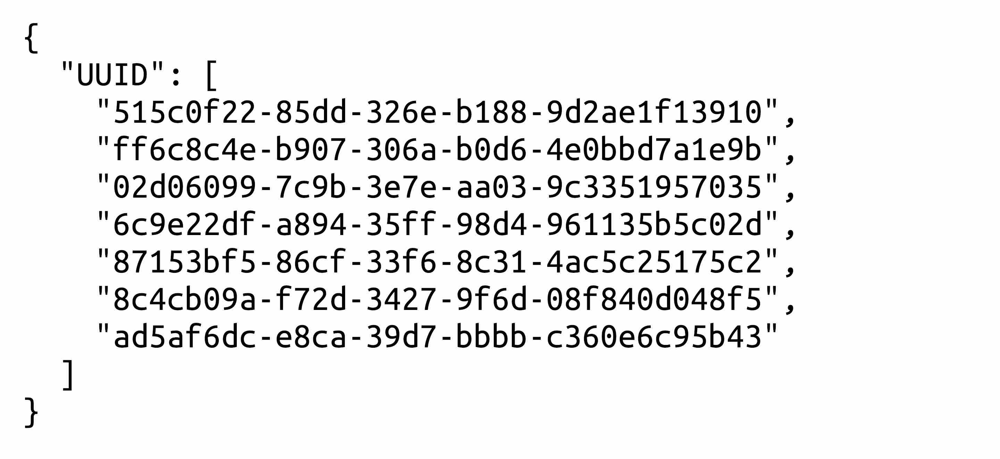

About
Kishowは気象庁がリアルタイムに配信する気象情報のXMLデータをPubSubHubbub(WebSub)を使って受信し、JSONに変換して再配布するAPIです。
情報はその場での使用を想定しているので、データが保持されるのは長くても1日程度(基本は10分)です。(データベース用途ではお使いいただけません)
Usage
最新の情報を得るには https://kakudo.app/kishow/ をポーリングして新たなデータのUUIDが登録されていないかチェックしてください。
最近(10分程度)配信された情報のUUIDが配列に入っているので、新たな情報があればAPIのURLの後に繋げて情報を取得します。
例えば、UUIDが515c0f22-85dd-326e-b188-9d2ae1f13910の情報を取得したい場合、https://kakudo.app/kishow/515c0f22-85dd-326e-b188-9d2ae1f13910から下のようなJSON化された情報を得ることができます。(例は一部です。実際の情報はもっと長い可能性もあります。)
このAPIでは便宜上、元のXMLデータにある属性値を省いています。ご了承ください。
Option
基本はプログラムからのポーリングを想定しているため、JSONは最小化されたものが配布されていますが、デバッグ目的など人が読む場合はHTTPヘッダーで整形オプションを設定してください。
X-JSON-STYLE: PRETTYとHTTP Headerに追加することで整形されたJSONを配布します。
Finally
このAPIは私個人の目的で作ったものなので、正常な動作は保証されていませんし、予告なくサービスを終了するかもしれません。(なるべく頑張ります！)